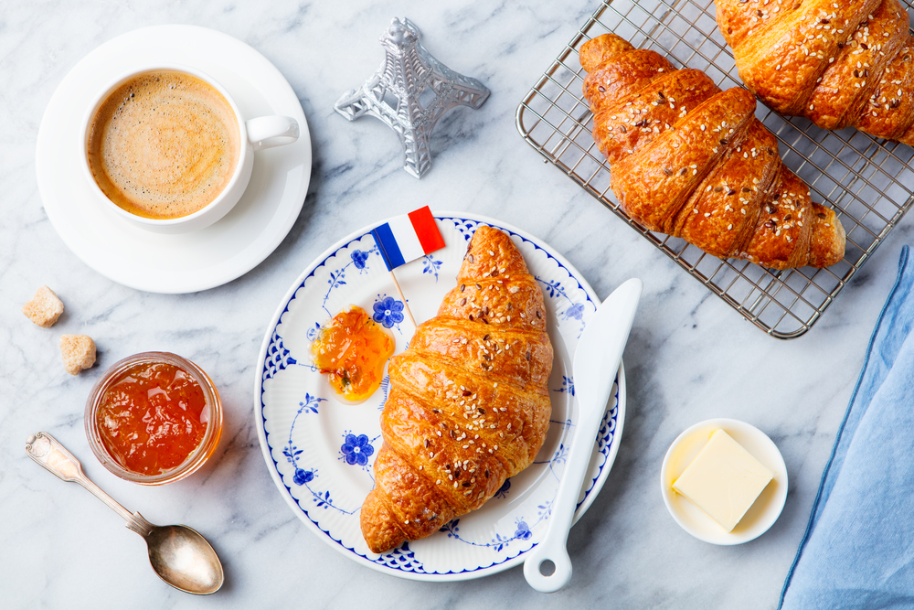

Culinária Francesa

A culinária francesa possui séculos de tradição e é reconhecida como uma das mais sofisticadas do mundo. Ela também é conhecida por escolas famosas como o Le Cordon Bleu.
Importância Cultural
A culinária francesa é uma das mais influentes do mundo. Valoriza a qualidade dos ingredientes, as técnicas de preparo e a apresentação dos pratos. Em 2010, foi reconhecida como patrimônio cultural pela UNESCO.
Técnicas
A França desenvolveu diversas técnicas culinárias utilizadas internacionalmente, como cortes específicos, preparação de molhos e métodos refinados de cozimento.
Formação de Chefs
A França possui algumas das escolas de culinária mais famosas do mundo, formando chefs que trabalham internacionalmente.